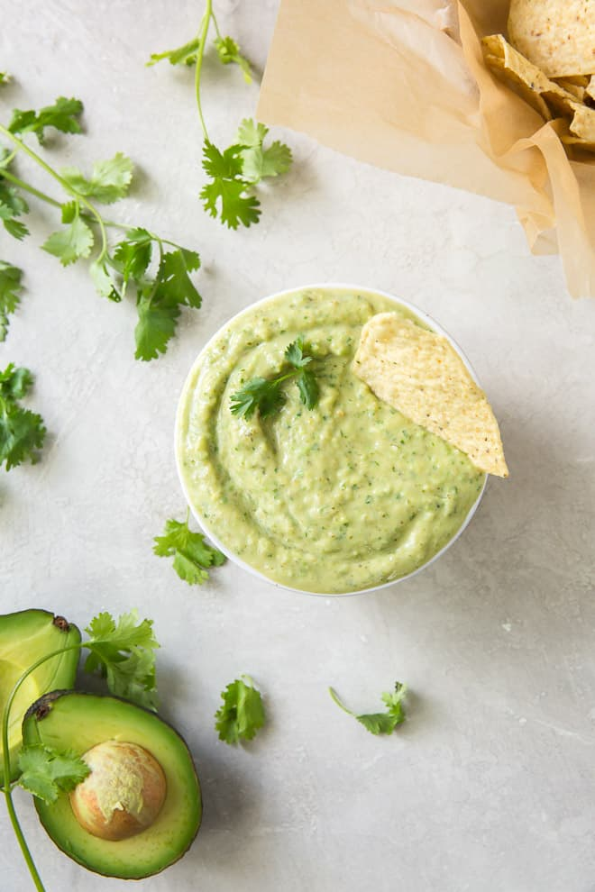

|  |
This is the best salsa ever:1 cup of cilantro
|
| Skills | |||
|---|---|---|---|
| Chopping | ☆ ☆ ☆ ☆ ☆ | HTML | ☆ ☆ ☆ ☆ ☆ |
| Dutch Ovening | ☆ ☆ ☆ ☆ | CSS | ☆ ☆ ☆ ☆ ☆ |
| Grilling | ☆ ☆ ☆ ☆ ☆ | QA | ☆ ☆ ☆ ☆ ☆ |
| Year | Work | Outcome | |
|---|---|---|---|
| 2006 | Culinary Class | Learned cooking basics | Yum |
| 2007-2009 | IDOS Class | 2nd place SJ Eq CookOff |